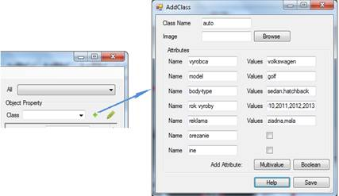
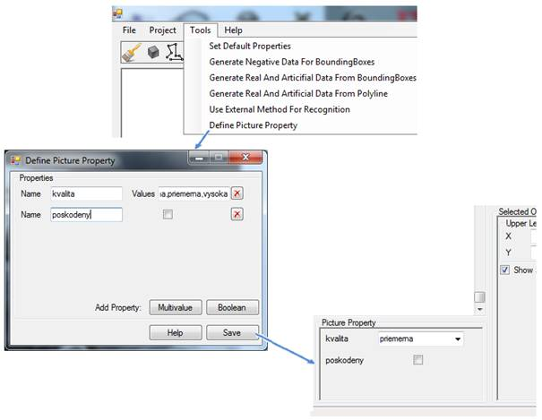
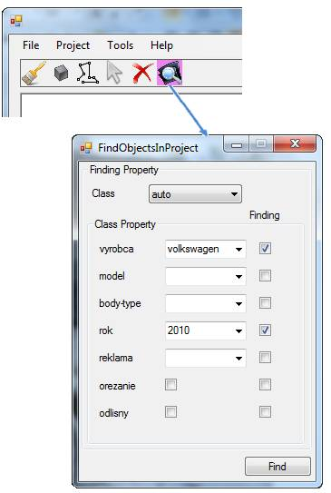
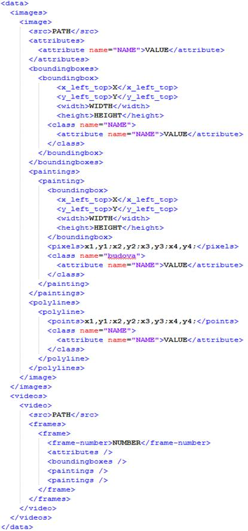
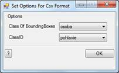
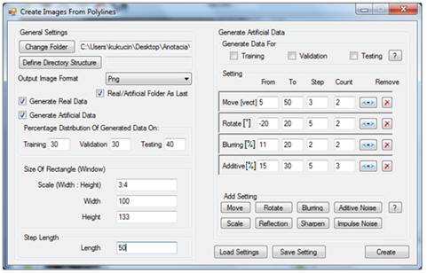

TUTORIAL: U�ÍVATE¼SKÁ PRÍRUÈKA
Obsah
Nastavenia pre projekt a anotáciu
Generovanie reálnych a umelıch dát
Popis anotaèného nástroja
Vytvorenı anotaènı nástroj slú�i na anotovanie obrázkov alebo videí za úèelom vytvorenia potrebného datasetu pre algoritmy, ktoré sú urèené na riešenie úloh poèítaèového videnia. Táto príruèka popisuje anotaènı nástroj z poh¾adu u�ívate¾a, èi�e ovládanie vytvorenej aplikácie a prístup k jednotlivım funkciám a ich vıznam.
Po spustení aplikácie sa u�ívate¾ovi zobrazí hlavné okno aplikácie ako mô�eme vidie� na obrázku 1. Jednotlivé funkcie programu sú nedostupné a� dovtedy, kım sa nevytvorí novı, respektíve neotvorí u� vytvorenı projekt. Medzi hlavné nástroje pre anotovanie sú painting, boundingbox a polyline, ktoré slú�ia na oznaèovanie záujmovıch oblastí na jednotlivıch obrázkoch. Ïalej je tu nástroj cursor, pomocou ktorého je mo�nı prístup k u� vytvorenım anotáciam na obrázkoch a to kliknutím do ohranièeného priestoru (boundingbox, painting) alebo kliknutím do blízkosti vytvorenej anotácie (polyline). Nástroj delete slú�i na odstránenie zvolenej anotácie. Pomocou nástroja find je mo�né vyh¾adáva� anotované objekty pod¾a niektorıch ich vlastností. Hlavné menu aplikácie slú�i na vytváranie a ukladanie projektov, nastaveniu projektu, pridávanie novıch obrázkov do projektu, ako aj pre prístup k funkciám generovania reálnych a umelıch dát z anotovanıch obrázkov.

Obrázok 1 Hlavné okno aplikácie
Vytvorenie nového projektu
Vytvori� novı projekt je mo�né cez menu aplikácie File -> New... (obrázok 2) a následne je potrebné vybra� buï prázdny prieèinok alebo rovno prieèinok obsahujúci obrázky, ktoré chceme anotova�.

Obrázok 2 Vytvorenie nového projektu
Po vıbere prieèinku nasleduje ïalší krok (obrázok 3). Cez menu aplikácie Project -> Open For Project máme mo�nos� naèíta� buï video súbor (vo¾ba Video) alebo obrázky (vo¾ba Image).

Obrázok 3 Otvorenie obrázkov/videa pre anotáciu
V prípade, �e sme vybrali vo¾bu Image budú naèítavané obrázky. Ak sa nachádzajú v zlo�ke s projektom, tak sa nebudú kopírova� do tejto zlo�ky, prièom mô�u by� umiestnené aj v rôznych adresárovıch štruktúrach v rámci zlo�ky projektu a táto štruktúra bude zachovaná. Do zlo�ky projektu budú nakopírované len tie obrázky, ktoré sú umiestnené mimo prieèinku projektu. Po nakopírovaní sú v�dy umiestnené priamo do tohto prieèinku. Z toho vyplıva, �e v prípade ak chceme ma� naèítané obrázky v rámci projektového adresára rozmiestnené do rôznych adresárovıch štruktúr, je potrebná pri vytváraní nového projektu vybra� adresár, v ktorom sa takto rozmiestnené obrázky nachádzajú.
V prípade, �e sme vybrali vo¾bu Video bude naèítavané video. Prièom v projekte musia ma� jednotlivé videá, ktoré chceme naèíta� unikátne názvy. Ak sa dané video naèítava zo zlo�ky projektu, nebude do tejto zlo�ky kopírované, v opaènom prípade sa do tejto zlo�ky nakopíruje. Pre ka�dé video sa v projekte vytvorí zlo�ka s názvom zhodnım s názvom videa, do ktorej budú nakopírované všetky snímky (frame) videa.
Všetky obrázky, respektíve snímky videa projektu sú zobrazené na spodnej lište anotaèného nástroja (obrázok 4), prièom je mo�né ktorıko¾vek z nich sprístupni� pre anotáciu a to kliknutím na tento obrázok.
Obrázok 4 Lišta so všetkımi naèítanımi obrázkami/snímkami projektu
Cez menu aplikácie Project -> Close Current Image je mo�né zatvori� ktorıko¾vek obrázok, respektíve snímku videa, s ktorou nechceme pracova�, èím bude vylúèená z anotácie.
Nastavenia pre projekt a anotáciu
Prostredníctvom menu aplikácie File -> Options je mo�né definova� nastavenia pre jednotlivé nástroje ako aj vodiace èiary (obrázok 5). Tu je mo�né zadefinova� farby pre jednotlivé nástroje anotovania ako aj hrúbku èiar, prièom mô�eme zadefinova� odlišné nastavenia pre zobrazenie vytvorenıch anotácií a pre zobrazenie anotácií, ktoré sa vytvárajú. Rovnaké nastavenia je mo�né zadefinova� aj pre vodiace èiary, prièom je tu aj mo�nos� vypnutia/zapnutia zobrazovania vodiacich èiar v danom projekte.

Obrázok 5 Nastavenie projektu
Pred samotnou anotáciou je potrebné vytvori� si triedy, do ktorıch budeme priraïova� anotované objekty. Triedy vytvoríme prostredníctvom u�ívate¾ského rozhrania, ku ktorému sa dostaneme kliknutím na „+“ umiestnenom na ¾avom panely v anotaènom nástroji hneï ved¾a comboboxu s triedami (obrázok 6). Tu zadefinujeme názov triedy a jej atribúty. Hodnoty atribútov pre triedy zadefinujeme vymenovaním a oddelením bodkoèiarkou alebo èiarkou. Hodnoty jednotlivıch atribútov mô�eme, ale nemusíme zadefinova�, preto�e pri ich vypåòaní u� poèas anotácie je mo�né zada� novú hodnotu alebo si vybra� s preddefinovanıch. Ak zadáme novú hodnotu, táto sa automaticky pridá do predvolenıch mo�ností.

Obrázok 6 Vytvorenie novej triedy objektov
Aby sme si u¾ahèili anotovanie je mo�né zadefinova� si defaultné nastavenia pre jednotlivé triedy. U�ívate¾skému rozhraniu pre túto vo¾bu sa dostaneme cez Menu -> Tools -> Set Default Property (obrázok 7). Jednoducho staèí zapísa� po�adovanú hodnotu atribútu, avšak pred tuto hodnotu je potrebná napísa� znak „=“. Je to potrebné kvôli tomu, �e je mo�né zadefinova�, aby sa hodnota atribútu generovala pod¾a cesty k danému obrázku. Vtedy zvolíme pre tento atribút hodnotu {1,2,3,...} pod¾a toho, ktorá zlo�ka (zanorenie v ceste) predstavuje hodnotu atribútu. Ïalej je mo�né prednastavi� triedu, ktorá sa má nastavi� pri prechode medzi obrázkami.

Obrázok 7 Preddefinovanie hodnôt atribútov jednotlivıch tried
Ka�dá trieda predstavuje mno�inu, do ktorej patria objekty s rovnakımi charakteristickımi znakmi (napríklad osoby, motorové vozidlá, znaèky). Jednotlivé triedy majú charakteristické vlastnosti, ktoré ich popisujú, ale taktie� sú popísané vlastnos�ami danımi konkrétnym obrázkom (kvalita, poèasie a iné). Na ka�dom u�ívate¾ovi zále�í èi si vytvorí novú triedu, ktorá bude buï všeobecnejšia (motorové vozidlo) alebo konkrétnejšia (auto, motorka, nákladné auto) alebo si vyberie jednu z preddefinovanıch tried. Pri vytváraní tried mô�e pou�ívate¾ definova� jednotlivım triedam ¾ubovo¾nı poèet vlastností. Tieto triedy je mo�né kedyko¾vek upravi�. Pre rıchlejšie rozlíšenie v mno�ine tried mô�eme triedam definova� aj obrázok, ktorı bude zobrazenı v ponuke všetkıch vytvorenıch tried.
V súbore so zoznamom vytvorenıch tried sa nachádzajú názvy tried spolu s cestami k ich obrázkom. Tento zoznam je zobrazenı v komboboxe. Po vıbere z komboboxu sa naèíta súbor s vlastnos�ami vybranej triedy. Pou�ívate¾ mô�e následne definova� vlastnosti objektu. V súbore s vlastnos�ami triedy sú zadefinované názvy a hodnoty atribútov, z ktorıch mô�e u�ívate¾ vybera�. Obrázok 8 zobrazuje štruktúru tıchto súborov.

Obrázok 8 Štruktúra súborov obsahujúcich vlastnosti tried
U�ívate¾ má mo�nos� zadefinova� aj atribúty na úrovni jednotlivıch obrázkov, ktoré charakterizujú obrázok ako celok, èi�e nepopisujú osobitne jednotlivé objekty na obrázkoch. Spôsob vytvárania je podobnı ako pri vytváraním tried, èi�e sa zadefinujú jednotlivé atribúty a hodnoty pre tieto atribúty zadefinujeme vymenovaním a oddelením bodkoèiarkou alebo èiarkou. Po potvrdení tıchto nastavenı sa vytvorené atribúty zobrazia v hlavnom okne aplikácie na paneli Picture property. Na obrázku 9 je zobrazenı spôsob definovania tıchto atribútov.

Obrázok 9 Definovanie atribútov na úrovni obrázka
Po vytvorení projektu, naèítaní obrázkov a zadefinovaní tried pre anotovanie, mô�eme zaèa� anotova� jednotlivé obrázky. Pre urıchlenie práce pri anotovaní sú dostupné nasledovné klávesové skratky:
CTRL + Right Arrow Next Picture
CTRL + Left Arrow Previous Picture
CTRL + X Close Current Picture
CTRL + DEL Delete Selected Object
CTRL + PLUS Zoom In
CTRL + MINUS Zoom Out
Nástroje na anotovanie
Po vıbere jedného nástroja na anotovanie z panelu nástrojov (obrázok 1) mô�eme oznaèova� objekty na jednotlivıch obrázkoch. Pre ¾ahšiu orientáciu v obraze nám slú�ia vodiace èiary. Ovládanie jednotlivıch nástrojov je jednoduché a to:
· boundingbox: klikneme na obrázok v mieste, kde chceme umiestni� jeden z rohov boundingboxu a následne pri stlaèenom tlaèidle myšky vytvárame boundingbox, teda nastavujeme jeho ve¾kos� a pozíciu. Po nakreslení je mo�né ešte zmeni� jeho ve¾kos�,
· painting: kliknutím v obrázku vytvoríme prvı bod paintingu a pri stlaèenom tlaèidle myšky pridávame nové body do paintingu, ktoré budú tvori� obrys (kontúru). Po uvo¾není myšky sa automaticky spojí poslednı bod s prvım,
· polyline: jednoduchım naklikávaním pomocou myšky vytvárame body v obraze, ktoré sú následne prepájané, èím vytvárame danú polyline. Ukonèenie vytvárania aktuálnej polyline je dostupné prostredníctvom dvojkliknutia.
Po vytvorení anotácie sa jej automaticky priradí zvolená trieda aj s nastavenımi atribútmi, aj prípadné zmeny tıchto nastavení sú automaticky aktualizované. Èi�e ak potrebujeme zmeni� nastavenia niektorej anotácie staèí ju oznaèi� (pomocou nástroja Cursor) a vykona� po�adované zmeny, ktoré sa automaticky aktualizujú. Obrázok 10 zobrazuje rozlo�enie jednotlivıch prvkov anotaèného nástroja a ich vıznam pri anotovaní obrázkov.

Obrázok 10 Hlavné okno aplikácie pri anotácií
Nástroj find (obrázok 11) slú�i pre vyh¾adávanie, prièom je potrebné zvoli� triedu pod¾a ktorej sa majú objekty vyh¾adáva�, a ïalej je mo�né zadefinova� hodnoty pre atribúty tejto triedy pod¾a ktorıch sa má vyh¾adáva�, ak tieto nie sú zadané tak sa vyh¾adáva len na základe triedy objektov. Po zadefinovaní parametrov vyh¾adávania a potvrdení sa zobrazia nájdene objekty vyhovujúce nastavenım parametrom, prièom je mo�né prechádza� medzi jednotlivımi obrázkami projektu, na ktorıch budú zobrazované len objekty vyhovujúce parametrom vyh¾adávania. Pri zapnutom vyh¾adávaní nie je mo�ne vytvára� nové objekty, dostupne sú len nástroje kurzor a delete.

Obrázok
11 Nástroj pre vyh¾adávanie vytvorenıch objektov na obrázkoch
Ulo�enie projektu
Po ukonèení anotovania ako aj poèas jeho priebehu (pre prípad zálohy) je mo�né kedyko¾vek svoju prácu ulo�i�, èím sa vlastne ulo�í celı projekt. Ulo�enie je dostupné cez menu aplikácie File->Save as..., zobrazené na obrázku 12.

Obrázok 12 Ulo�enie projektu
Je mo�né vybra� si buï formát xml (obrázok 13), èo je vlastnı formát aplikácie alebo si zvoli� niektorı z formátov csv, ktoré predstavujú štandardne pou�ívané formáty v inıch datasetoch. Avšak tieto sú oklieštené oproti xml formátu (napríklad podporujú len boundingboxy), èi�e ak chceme zachova� všetky dáta vytvorené v projekte je vhodné pou�i� formát xml a následne si vytvori� aj csv formát ak je potrebnı.

Obrázok 13 Formát XML súboru
Anotaènı nástroj zabezpeèuje podporu pre dva csv formáty (formáty obsahujúce hodnoty oddelené èiarkou, respektíve znakom) a to:
· prvı z formátov (v aplikácii oznaèenı ako „Csv2Piont“) podporuje len boundingboxy a jeho štruktúra je jednoduchá, prièom pre ka�dı boundingbox je vytvorenı jeden riadok záznamu. Záznam obsahuje cestu k obrázku, na ktorom sa nachádza danı boundingbox, súradnice ¾avého horného bodu a súradnice pravého dolného bodu boundingboxu a nakoniec obsahuje atribút ClassID, ktorı popisuje danı boundingbox. Všetky tieto hodnoty sú navzájom oddelené bodkoèiarkou, teda vısledná štruktúra vyzerá nasledovne:
o image_path;left_top_x;left_top_y; right_bottom_x;right_bottom_y;classid
· druhı formát (v aplikácii oznaèenı ako „CsvPiontSize“) je ve¾mi podobnı predchádzajúcemu, jediné v èom sa odlišujú je to, �e v jednotlivıch záznamoch nie sú uvedené súradnice pravého dolného bodu boundingboxu, ale namiesto nich obsahuje záznam údaje o šírke a vıške daného boundingboxu, teda vısledná štruktúra záznamu popisujúceho jeden boundingbox je nasledovná:
o image_path;left_top_x;left_top_y;width;height;classid
Ak chceme ulo�i� projekt do csv formátu, tento bude obsahova� len dáta o boundingboxoch, dáta o všetkıch ostatnıch objektoch nebudú ulo�ené. Ïalej je pri tejto vo¾be potrebné zadefinova� hodnotu atribútu ClassID. Ak zvolíme pre ukladanie všetky triedy objektov tak atribút ClassID je automaticky nastavenı na názov triedy, èo je aj defaultné nastavenie. V prípade, �e chceme ulo�i� do tohto formátu len konkrétnu triedu, tak potom máme na vıber pre atribút ClassID niektorı z atribútov tejto triedy, èi�e hodnota tohto atribútu triedy konkrétneho anotovaného objektu bude napåòa� atribút ClassID.
Takto vytvorenı vıstupnı súbor sa ulo�í tam, kde sa nachádza zlo�ka projektu, teda bude v adresárovej štruktúre na rovnakej úrovni ako je zlo�ka projektu.
Naèítanie projektu
Ak máme projekt ulo�enı je mo�né ho kedyko¾vek opä� naèíta� do prostredia anotaèného nástroja a pokraèova� v anotovaní, respektíve meni� u� naanotované objekty. Vo¾ba naèítania projektu sa nachádza v menu aplikácie File->Open…, táto vo¾ba je zobrazená na obrázku 14.

Obrázok 14 Naèítanie ulo�eného projektu
Prostredníctvom tejto vo¾by je mo�né aj importova� inı formát ako xml, v aktuálnej verzii anotaèného nástroja sú podporované aj dva csv formáty popísané v èasti Ulo�enie projektu. V prípade vıberu csv formátu je potrebné zadefinova� nasledujúce nastavenia (obrázok 15): Najskôr je potrebné vybra� o akı konkrétny formát csv sa jedná (viï. èas� Ulo�enie projektu). Ïalej je potrebné zadefinova� triedu boundingboxom, ktoré sa budú naèítava� z csv formátu (vo¾ba: Class Of Boundingboxes), ak sa vyberie mo�nos� ClassId znamená to, �e sa trieda boundingboxu priradí pod¾a hodnoty ClassId v súbore csv. Ak sa vyberie iná hodnotu pre triedu boundingboxu, následné je potrebné nastavi� akému atribútu danej triedy sa priradí hodnota ClassId zo súboru csv (vo¾ba: ClassID).

Obrázok 15 U�ívate¾ské rozhranie pre
vyplnenie dodatoènıch nastavení pre csv formát
Generovanie reálnych a umelıch dát
Pre mo�nos� generovania reálnych ako aj umelıch dát pre boundingboxy je dostupná vo¾ba cez menu aplikácie Tools->Generate Real And Artificial Data From BoundingBoxes, a pre polyline je to vo¾ba Tools->Generate Real And Artificial Data From Polyline.
Generovanie reálnych a umelıch dát pre boundingboxy:
Táto funkcia slú�i na ulo�enie všetkıch boundingboxov v aktuálnom projekte ako obrázkov do adresárovej štruktúry vytvorenej pod¾a vlastností tıchto boundingboxov. Je mo�né generova� boundingboxy s alebo bez normalizácie. Pri vıbere vo¾by bez normalizácie sa ulo�ia boundingboxy ako obrázky bez zmeny ve¾kosti, èi�e v takej ve¾kosti ako boli nakreslené. Pri vo¾be s normalizáciou je potrebné zada� aspoò dva z parametrov - šírka, vıška a pomer šírky a vıšky, prièom tieto nastavenia definujú normalizovanú ve¾kos�, ktorú budú ma� všetky vısledné obrázky predstavujúce jednotlivé boundingboxy.
Tie� je tu potrebné zadefinova� percentuálne rozdelenie generovanıch dát na tréningové, validaèné a testovacie dáta.
Je taktie� mo�né zapnú� generovanie umelıch dát pre všetky alebo niektorú zo skupín tréningovıch, validaènıch a testovacích dát. Ak je táto vo¾ba zapnutá je potrebné vybra� a nastavi� transformácie ako sa majú tieto umelé dáta generova�.
To, èi budú umelé dáta pre jednotlivé skupiny vygenerované, urèuje aj percentuálne rozdelenie. Príklad: Ak je zadefinované percentuálne rozdelenie (100/0/0) (tréning/validácia/test), tak umelé dáta mô�u byt generované len pre tréningovú èas�. Aj po zaškrtnutí inıch èastí sa pre ne nevygenerujú umelé dáta, lebo percentuálne rozdelenie hovorí, �e pre tieto èasti nemajú by� vytvorené �iadne dáta.
Generovanie umelıch dát v prípade, �e generujeme aj reálne dáta prebieha nasledovne: najskôr sa náhodne vyberie èas�, do ktorej sa vlo�í originálny (reálny) obrázok a následne všetky umelé dáta od neho odvodené budú vlo�ené do tej istej skupiny.
Obrázok 16 zobrazuje u�ívate¾ské rozhranie pre generovania reálnych a umelıch dát z boundingboxov.

Obrázok 16 U�ívate¾ské rozhranie pre generovanie reálnych a umelıch dát pre boundingboxy
Na vıber pre generovanie umelıch dát je posun, rotácia, zmena ve¾kosti a zrkadlenie pôvodnıch boundingboxov, ako aj pridanie aditívneho alebo impulzného šumu do obraz, ïalej je mo�né obraz rozostri� alebo naopak zaostri�:
· posun - zadá sa minimálna a maximálna ve¾kos� vektora, o ktorú sa má boundingbox posunú�, prièom smer posunu sa bude generova� automaticky. Tie� je potrebné zada� krok s akım sa má hodnota posunu z daného intervalu generova� a poèet dát, ktoré sa majú pre túto vo¾bu generova�,
· rotácia - taktie� sa zadá rozsah (od, do) v stupòoch ,o ko¾ko sa má danı boundingbox natoèi�, prièom záporná hodnota znamená otoèenie proti smeru hodinovıch ruèièiek. A následne sa zadá krok a poèetnos� pre túto vo¾bu generovania,
· zmena ve¾kosti - zadá sa rozsah v percentách, ktorı urèuje v akom intervale sa bude nová ve¾kos� vzh¾adom na pôvodnú ve¾kos� pohybova�, ïalej sa zadá krok a poèetnos� tak ako aj pri predchádzajúcich vo¾bách,
· zrkadlenie - tu sa zvolí, aké zrkadlenie sa má vykona�, èi vertikálne alebo horizontálne alebo obidve súèasne,
· aditívny šum - zadá sa rozsah v percentách urèujúci mieru zašumenia, prièom prípustnı rozsah je z intervalu (0-100> a tie� je potrebné zada� krok a poèetnos�,
· impulznı šum - tie� je potrebné zada� rozsah v percentách, ktorı urèuje ko¾ko percent obrázku sa má zašumi�, èi�e prípustnı rozsah je rozsah z intervalu (0-100>. Ïalej je potrebné zada� krok a poèetnos� ako aj pri predchádzajúcich vo¾bách,
· rozmazanie - je potrebné zadefinova� rozsah, krok a poèetnos�, prièom rozsah urèuje mieru rozostrenia (urèuje aké ve¾ké masky sa mô�u pou�i� pri rozostrovaní - vyu�íva sa tu gaussove rozostrenie). Z pou�itého prístupu pri vytváraní rozostrenia vyplıva aj prípustnos� len nepárnych hodnôt zo zadefinovaného intervalu,
· zaostrenie - tu nie je mo�né dodefinova� �iadne ïalšie nastavenia, teda pri tejto vo¾be sa v�dy vytvorí len jeden umelı obrázok.
Ka�dú z tıchto volieb je mo�né prida� viackrát a pre ka�dú urèi� samostatné nastavenia generovania.
Ïalšou vo¾bou, ktorú je potrebné zadefinova� je nastavenie atribútov pre vyváranie adresárovej štruktúry (obrázok 17). Vo¾ba Sort Directories urèuje èi majú by� dáta rozdelené najskôr do zlo�iek pod¾a toho èi sú reálne alebo umelé a a� následne sa má vytvori� adresárová štruktúra pod¾a atribútov danıch objektov, z ktorıch sa dáta generujú, alebo sa vytvorí najskôr adresárová štruktúra pod¾a atribútov danıch objektov a a� potom sa dáta rozdelia do zlo�iek pod¾a toho èi sú reálne alebo umelé,

Vo¾ba Number Of Attributes For Structure slú�i na zadefinovanie poètu atribútov, ktoré sa majú pou�i� pri vytváraní adresárovıch štruktúr. Atribúty triedy sa vyberajú pod¾a poradia v akom sú definované. Èi�e ak zadáme napríklad poèet 3, tak sa bude vytvára� adresárová štruktúra pod¾a prvıch 3 atribútov. Po potvrdení tıchto nastavení sa zobrazí struènı popis nastavení pre vytváranie adresárovıch štruktúr v textboxe ved¾a tlaèidla pre prístup k tejto vo¾be.

Obrázok 17 Zadefinovanie atribútov pre vyváranie adresárovej štruktúry
Po tıchto nastaveniach sa spustení generovanie, prièom sa boundingboxy ukladajú do adresárovej štruktúry urèenej vlastnos�ami jednotlivıch boundingboxov, prièom reálne a umelé dáta sú ulo�ené v osobitıch zlo�kách, aby bolo mo�né ich jednoducho odlíši�. A taktie� umelé dáta sú roztriedené v zlo�kách pod¾a toho, akou transformáciou vznikli z pôvodného obrázku.
Po vygenerovaní tıchto dát sa vytvorí aj logovací súbor, obsahujúci informácie o generovaní, èi�e o poètoch vygenerovanıch dát, ako aj o jednotlivıch nastaveniach generovania reálnych ako aj umelıch dát. Tento logovací súbor sa ulo�í do zlo�ky, ktorá bola vybraná pre ukladanie vygenerovanıch dát.
Je tu taktie� mo�nos� ulo�i� si zadefinované nastavenia alebo naèíta� si nastavenia, vïaka èomu je mo�né rıchlo a jednoducho pou�i� u� raz zadefinované nastavenia.
Generovanie reálnych a umelıch dát pre polyline
Táto vo¾ba slú�i na ulo�enie všetkıch polyline ako obrázkov a je zalo�ená na rovnakom princípe ako predchádzajúca funkcia. Je tu mo�nos� generova� reálne aj umelé dáta, nastavi� percentuálne rozdelenie generovanıch dát ako aj nastavi� jednotlivé vo¾by generovania umelıch dát. Avšak na rozdiel od generovania dát pre boundingboxy je tu potrebná zadefinova� ve¾kos� okna (obdå�nika), ktorım sa bude prechádza� po danej polyline a vyrezáva� obrázky pod¾a tohto okna. Taktie� je potrebné zada� krok, ktorı urèí ako sa bude po danej polyline posúva�. Dáta sú generované do adresárovej štruktúry vytvorenej pod¾a rovnakıch pravidiel ako pri vo¾be generovania dát pre boundingboxy a tie� sa vytvára logovací súbor s informáciami o nastaveniach a poèetnostiach generovania. obrázok 18 zobrazuje u�ívate¾ské rozhranie pre vo¾bu generovania reálnych a umelıch dát pre polyline.

Obrázok 18 U�ívate¾ské rozhranie pre generovanie reálnych a umelıch dát pre polyline
Generovanie negatívnych dát
Pre mo�nos� generova� negatívne dáta je tu vo¾ba menu aplikácie (obrázok 19). U�ívate¾ musí nadefinova� rozmery obrázkov, aké sa majú vytvára� a taktie� zlo�ku, do ktorej sa majú tieto dáta ulo�i�. Prechádzajú sa jednotlivé obrázky a vyrezávajú sa z nich èasti zadefinovanej ve¾kosti tak, aby nezasahovali do anotovanıch dát. Vyrezávané èasti sa navzájom neprekrıvajú.

Obrázok 19 U�ívate¾ské rozhranie pre generovanie negatívnych tréningovıch dát